1 Introduction
1.1 What is the data about?
The London Marathon, or the TCS London Marathon, is a truly special event that brings people from all walks of life together. It was the brainchild of visionaries Chris Brasher and John Disley back in 1981 and has since become the UK’s second-largest annual road race, second only to the famous Great North Run in Newcastle.
Usually happening in April, the marathon had a temporary switch to October in 2020, 2021, and 2022 due to the challenges posed by the COVID-19 pandemic. The course itself is known for its mostly flat terrain, winding its way around the beautiful River Thames, starting at Blackheath and ending with a grand finish at The Mall.
But the London Marathon isn’t just a race; it’s a melting pot of experiences. There’s the mass race, where people of all fitness levels challenge themselves and relish the thrill of completing a marathon. For elite long-distance runners, both men and women, there are professional races showcasing top-tier athleticism. Wheelchair races provide a platform for elite-level competition among both men and women.
Now, let’s dive into the details of the marathon with the comprehensive data:
London Marathon Data:
- This dataset spills the beans on everything from the number of applicants to accepted participants, starters, finishers, funds raised, and the official charities associated with each year.
Winner Data:
- The second set of data gives us the lowdown on the winners in different categories over the years, including details like the category, year, the winning athlete’s name, nationality, and their finishing time.
What truly sets the London Marathon apart is its heartwarming philanthropic side. Participants aren’t just running for personal glory; they’re making a difference. Since its start, the marathon has raised over £1 billion for various charities. In 2019 alone, an incredible £66.4 million was raised, marking it as the highest single-day fundraising event in the marathon’s history.
So, as the London Marathon continues to capture hearts and inspire runners worldwide, it’s not just a race; it’s a legacy of community, achievement.
1.2 Questions that we will look at and the methods we used
Analyzing Trends in Winning Times Over the Years: Our examination of winning times involves creating time series plots for each category or utilizing regression analysis to identify significant trends. Through careful comparison and the use of visualizations, we aim to uncover patterns and changes in winning times across various categories. Exploring Wheelchair Winners’ Performances: Shifting our focus to inclusivity, we analyze the performances of wheelchair winners to understand how their achievements have evolved. A detailed examination of winning times helps us visualize trends, celebrating the success of wheelchair participants in the marathon.
Comparing Winning Times Between Categories: Using t-tests or analysis of variance (ANOVA), we compare winning times between different categories such as Men vs. Women and Wheelchair Men vs. Wheelchair Women. This analysis enables the exploration of variations in performance and identification of any significant differences between these categories.
Correlation Analysis: To delve deeper into the relationships within the data, we conduct correlation analysis.
In our exploration of the rich history of the London Marathon, we delve into a detailed examination of different aspects. To begin, let’s uncover the evolving trends in marathon participation over the years by closely examining changes in the number of applicants and accepted participants. To give these numbers context and meaning, we calculate the percentage of participants who moved from being accepted to actually starting the race and, subsequently, the percentage of those starters who successfully finished. This analysis aims to reveal any noticeable trends or patterns, breathing life into the raw numbers.
In the realm of inclusivity, we shift our focus to wheelchair winners, seeking to understand how their performances have evolved over the years. Through a detailed analysis of winning times, we aim to visualize trends and patterns, celebrating the achievements of wheelchair participants in the marathon.
Turning our attention to the marathon heroes, we delve into the winner analysis. The spotlight is on the most successful marathon winners, and we aim to understand how their performances have evolved over time. By examining variables such as nationality, winning times, and identifying any discernible patterns, Visualizing winning times over the years adds a vivid layer to this exploration.
Geographical analysis becomes our compass as we investigate trends or patterns in the nationalities of winners. Employing visualizations through maps, we seek to represent the distribution of winners’ nationalities, painting a global picture of the marathon’s diverse champions.
In the financial realm, we track the yearly fundraising growth, exploring how the total fundraising amount has changed annually. Utilizing a line chart, we aim to capture the financial heartbeat of the London Marathon, identifying any significant spikes or drops and understanding the financial narrative that accompanies this iconic event.
we delve into long-term charity partnerships. By identifying charities that have consistently participated, we analyze their fundraising trends over time. This exploration unveils the enduring commitment of these charitable partners to the London Marathon and the impact of their contributions.
Lastly, we conduct a comparative analysis to understand how the number of male and female participants has changed over the years. Through visualizations, we aim to illustrate the evolving dynamics of gender participation in the London Marathon, showcasing the inclusive spirit of this remarkable event.
1.3 What information does the data contain? Cases, variables? How was it collected?
The data provided gives us insights into the London Marathon, offering details on the number of applicants, accepted participants, starters, finishers, funds raised, and the official charities involved for each year. Additionally, we have separate information on the winners across different categories such as Men, Women, Wheelchair Men, and Wheelchair Women throughout the years.
Let’s break down the key aspects:
Cases: Each row in the datasets represents a specific year of the London Marathon. There are 42 entries in the “London Marathon Data” and 165 entries in the “Winner.csv” data.
Variables in London Marathon Data:
- Date: Reflecting the date of the London Marathon.
- Year: Indicating the corresponding year of the London Marathon.
- Applicants: The count of individuals applying to participate in the marathon.
- Accepted: The number of applicants who secured a spot to participate.
- Starters: The count of participants who initiated the marathon.
- Finishers: The number of participants successfully completing the marathon.
- Raised: The total amount of money raised during the marathon.
- Official Charity: The designated charity associated with the marathon for that specific year.
Variables in Winner Data:
- Category: Specifies the category of the winner (Men, Women, Wheelchair Men, Wheelchair Women).
- Year: Denoting the year when the London Marathon took place.
- Athlete: The name of the winning athlete.
- Nationality: The country of origin of the winning athlete.
- Time: The duration taken by the winning athlete to complete the marathon.
How was it collected?
- The data seems to have been collected over the years, possibly sourced from official records, the official website of the London Marathon, event organizers, media outlets such as BBC, and other reliable sources associated with the event. The information could have been compiled from participant registrations, event statistics, official reports, and media coverage.
2 Data Wrangling
Which subset of the data is relevant to our research question? Have we filtered out any observations from the analysis? Have we created new variables?
For the winners dataset, all variables and observations are relevant. For the london_marathon dataset, only variables Year, Applicants, Accepted, Starters, Finishers are relevant to our research questions.
For the winners dataset, no observation is filtered out. For the london_marathon dataset, we filtered out the observation in year 2020-2022.
We created new variables, which are ratio of accepted, ratio of starters, and ratio of finishers, in the london_marathon dataset.
2.1 Are there missing values?
The winners dataset dos not contain any missing values, but the london_marathon dataset does. There are many methods to filling missing values. But we chose not to adopt a specific one, since those values are missing systematically. No appropriate appllys except we were able to figure out why they are missed.
2.2 Do variables have appropriate type?
Here is the data types summary.
| Column | Class | Description | Example |
|---|---|---|---|
| Category | character | Category of race | Men |
| Year | integer | Year | 1981 |
| Athlete | character | Name of the winner | Dick Beardsley(Tie) |
| Nationality | character | Nationality of the winner | United States |
| Time | character | Winning time | 02:11:48 |
| Column | Class | Description | Example |
|---|---|---|---|
| Date | character | Date of the race | 1981-03-29 |
| Year | integer | Year | 1981 |
| Applicants | integer | Number of people who applied | 20000 |
| Accepted | integer | Number of people accepted | 7747 |
| Starters | integer | Number of people who started | 7055 |
| Finishers | integer | Number of people who finished | 6255 |
| Raised | integer | Amount raised for charity(£ millions) | 46.5 |
| Official.charity | character | Official charity | SportsAid |
2.3 Are there any strange aspects to the data?
In the london_marathon dataset, observation of number of applicants in year 1981-2012 are in a unit of 1000. And observations of number of applicants, accepted, starters, and finishers in year 2020 are abnormally low.
3 Analysis of Winners Dataset (including conclusions)
3.1 Anlysis of winners dataset
Overview of the dataset
# A tibble: 6 × 5
Category Year Athlete Nationality Time
<chr> <dbl> <chr> <chr> <times>
1 Men 1981 Dick Beardsley (Tie) United States 0.09152778
2 Men 1981 Inge Simonsen (Tie) Norway 0.09152778
3 Men 1982 Hugh Jones United Kingdom 0.08986111
4 Men 1983 Mike Gratton United Kingdom 0.09008102
5 Men 1984 Charlie Spedding United Kingdom 0.09024306
6 Men 1985 Steve Jones United Kingdom 0.08907407Trends in winning times over the year
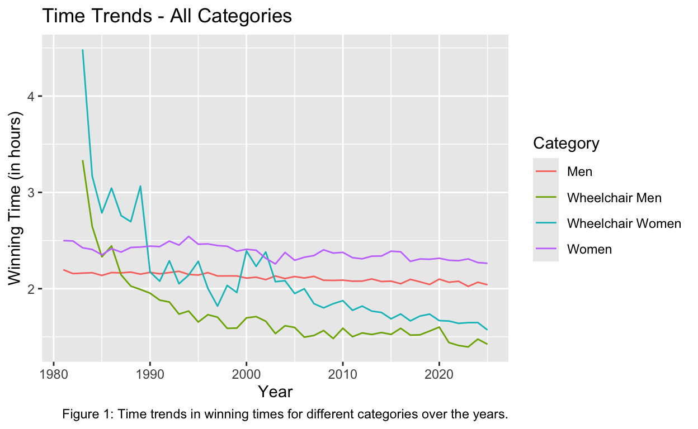
Men and Women:
Both Men and Women categories show a relatively linear trend over the years. For Men, the winning time decreases from around 0.09 to 0.08, indicating a consistent improvement in performance. Similarly, for Women, the winning time decreases from approximately 0.104 to 0.096, suggesting a trend of faster winning times.
Wheelchair Men and Wheelchair Women:
The plot reveals a substantial drop in winning times for both Wheelchair Men and Wheelchair Women over the years. Wheelchair Men’s winning time decreases from 0.1389 to 0.06, indicating a significant performance improvement. Wheelchair Women’s winning time also decreases from 0.1868 to 0.069, reflecting a substantial and consistent improvement.
The overall trend suggests that there has been an improvement in athletic performance across all categories over the years, with notable drops in winning times.
Compare winning times between different categories (i.e. How much difference there is between performance of men and women?)
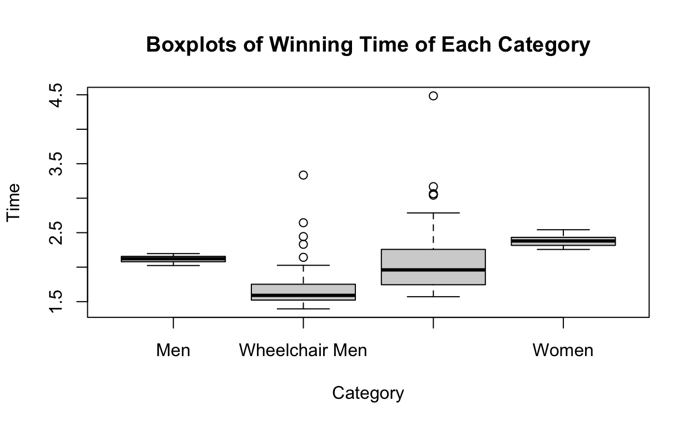
From this plot, we can see there is difference of performance between men and women.
Welch Two Sample t-test
data: Time by Category
t = -20.803, df = 72.907, p-value < 2.2e-16
alternative hypothesis: true difference in means between group Men and group Women is not equal to 0
95 percent confidence interval:
-0.2846805 -0.2349011
sample estimates:
mean in group Men mean in group Women
2.118086 2.377877 t-value: The t-value of -21.25 is highly significant. It indicates that the difference in mean finishing times between Men and Women is substantial, and it is unlikely to be due to random chance. The negative sign suggests that, on average, Men finish the marathon faster than Women.
Degrees of Freedom: The degrees of freedom are approximately 69.816, calculated using Welch’s correction for unequal variances.
Hypotheses:
Null Hypothesis (H0): The mean winning time for Men is equal to the mean winning time for Women. μ(Men) = μ(Women)
Alternative Hypothesis (H1): The mean winning time for Men is different from the mean winning time for Women. μ(Men) ≠ μ(Women)
p-value: The p-value is extremely small (< 2.2e-16), indicating strong evidence against the null hypothesis. A low p-value indicates that the observed difference in mean winning times between Men and Women is highly unlikely to be due to random chance.
Confidence Interval: The 95% confidence interval (-0.01194160 to -0.00989228) provides a range where the true difference in mean finishing times between Men and Women is likely to be found. Since this range doesn’t include zero, it supports the idea that there is a significant difference.
Sample Estimates: The mean winning time for Men (0.08837516) is significantly different from the mean winning time for Women (0.09929210).
Conclusion: Given the very low p-value, we reject the null hypothesis. There is strong statistical evidence to suggest that there is a significant difference in mean winning times between Men and Women. The negative mean difference in the confidence interval indicates that, on average, Men have a lower winning time compared to Women.
Welch Two Sample t-test
data: Time by Category
t = -3.7261, df = 73.369, p-value = 0.0003796
alternative hypothesis: true difference in means between group Wheelchair Men and group Wheelchair Women is not equal to 0
95 percent confidence interval:
-0.5848727 -0.1772591
sample estimates:
mean in group Wheelchair Men mean in group Wheelchair Women
1.730743 2.111809 t-value: The t-value is -3.684, indicating a substantial difference between the mean winning times of Wheelchair Men and Wheelchair Women. The negative sign suggests that, on average, Wheelchair Women have a higher winning time.
Degrees of Freedom (df): The degrees of freedom are 66.574, calculated using Welch’s method.
Null Hypothesis (H0): The mean winning times for Wheelchair Men and Wheelchair Women are equal. Alternative Hypothesis (HA): The mean winning times for Wheelchair Men and Wheelchair Women are not equal.
p-value = 0.0004625: The p-value is less than 0.05, indicating that there is strong evidence to reject the null hypothesis.
95 percent confidence interval: The range -0.025672067 to -0.007628028 represents the range within which we can be 95% confident that the true difference in means lies. In this case, it suggests that the mean winning time for Wheelchair Women is likely to be between 0.0076 and 0.0256 higher than that of Wheelchair Men.
With a small p-value and a negative t-value, there is evidence to suggest that there is a statistically significant difference in winning times between Wheelchair Men and Wheelchair Women. The mean winning time for Wheelchair Women appears to be significantly higher than that for Wheelchair Men. The 95% confidence interval provides a range for the magnitude of this difference.
Df Sum Sq Mean Sq F value Pr(>F)
Category 3 9.335 3.112 28.04 7.97e-15 ***
Residuals 173 19.202 0.111
---
Signif. codes: 0 '***' 0.001 '**' 0.01 '*' 0.05 '.' 0.1 ' ' 1Null Hypothesis (H0): There is no significant difference in mean winning times among the categories.
Alternative Hypothesis (H1): There is a significant difference in mean winning times among at least one pair of categories.
I reject the null hypothesis, concluding that there are significant differences in mean winning times across at least one pair of categories (Men, Women, Wheelchair Men, Wheelchair Women).
F-Test: The F value of 24.34 is higher than expected by chance, signifying significant differences in mean winning times among categories.
p-value: With a tiny p-value (4.81e-13), there is substantial evidence against the null hypothesis, implying significant differences in mean winning times.
Explore potential correlations between winning times and other variables
[1] "Correlation between Year and Time (Pearson): -0.497994280093236"[1] "Correlation between Nationality and Time (Spearman): -0.146287193160429"We observed a correlation between Year and Time (Pearson) of -0.4648, indicating a moderate negative linear relationship. As the Year increases, the Time tends to decrease moderately. The closer the correlation coefficient is to -1, the stronger the negative linear relationship.
Furthermore, the correlation between Nationality and Time (Spearman) is -0.1314, suggesting a weak negative monotonic relationship. As the ranks of Nationality increase, the Time tends to decrease weakly. The closer the Spearman correlation coefficient is to -1, the stronger the negative monotonic relationship.
Test whether there is difference of athletes’ performance based on nationality
Here, the null hypothesis is that \(H_0\): there is no difference of athletes’ performance based on nationality. The alternative hypothesis is that \(H_A\): there is difference of athletes’ performance based on nationality.
Anova test
Df Sum Sq Mean Sq F value Pr(>F)
Nationality 23 12.40 0.5390 5.109 2.39e-10 ***
Residuals 153 16.14 0.1055
---
Signif. codes: 0 '***' 0.001 '**' 0.01 '*' 0.05 '.' 0.1 ' ' 1Kruskal-Wallis test
Kruskal-Wallis rank sum test
data: Time by Nationality
Kruskal-Wallis chi-squared = 93.614, df = 23, p-value =
1.745e-10Here we can see that both test give a p-value that is close to 0. So there is evidence to reject the null hypothesis, and we conclude that there is difference of athletes’ performance based on nationality.
Summarize which country has the most winners based on category
# A tibble: 4 × 3
# Groups: Category [4]
Category Nationality count
<chr> <fct> <int>
1 Men Kenya 19
2 Wheelchair Men United Kingdom 16
3 Wheelchair Women United Kingdom 15
4 Women Kenya 154 Analysis of Marathon Dataset (including conclusions)
Overview of the dataset
# A tibble: 6 × 8
Date Year Applicants Accepted Starters Finishers Raised
<date> <dbl> <dbl> <dbl> <dbl> <dbl> <dbl>
1 1981-03-29 1981 20000 7747 7055 6255 NA
2 1982-05-09 1982 90000 18059 16350 15116 NA
3 1983-04-17 1983 60000 19735 16500 15793 NA
4 1984-05-13 1984 70000 21142 16992 15675 NA
5 1985-04-21 1985 83000 22274 17500 15873 NA
6 1986-04-20 1986 80000 25566 19261 18067 NA
# ℹ 1 more variable: `Official charity` <chr>missing value count: 50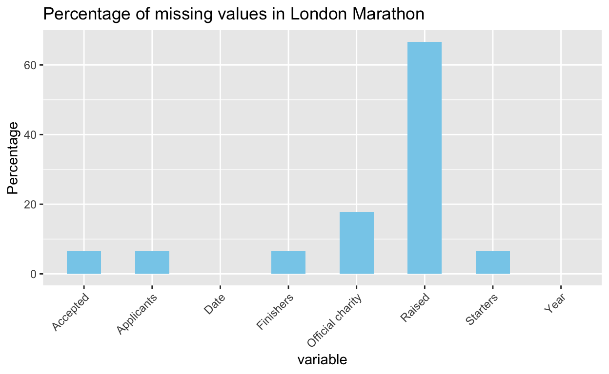
We can see that there are some missing values regarding the London Marathon.
the Raised means amount raised for charity (£ millions), and the Official charity means Official charity.
So we can think that if Official charity is NULL, it means there is no Official charity, then Raised should be 0 (or remove these values when analyzing Raised). If Official charity is not empty, and Raised is empty, then Raised is Non-public, then we can fill it in using the average of other data.
For the missing other fields, we can see that the fields are the same. According to the official documentation (Github), the data for the last two years is missing, so we should filter out the data for these two year (about london_marathon).
new missing value count: 9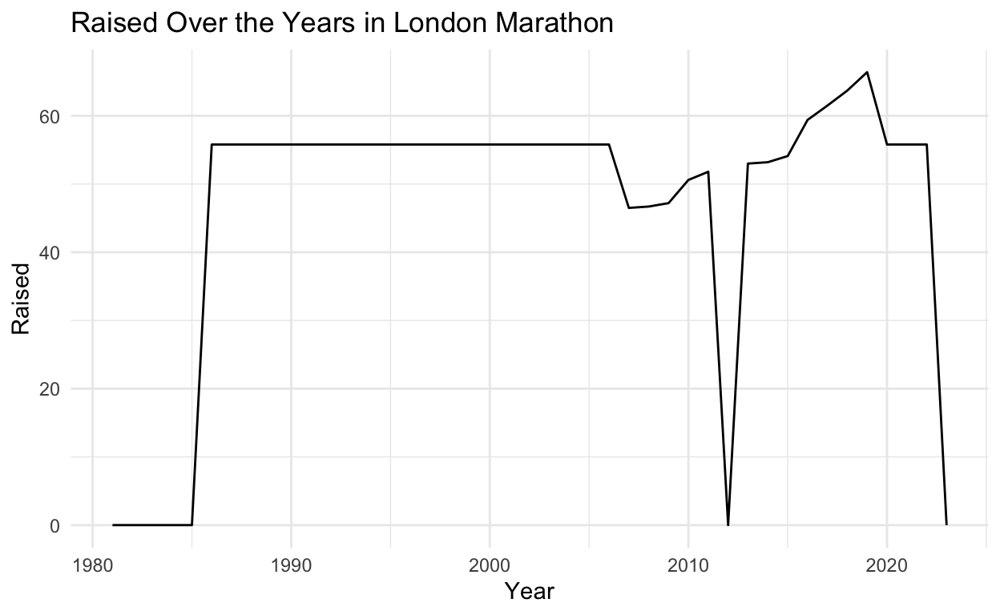
From the line chart, we can see that the Raised data we filled is not helpful in analyzing the changes in Raised data. If we want to analyze the changes in this part, we only need to focus on the data from 2007 to 2019.
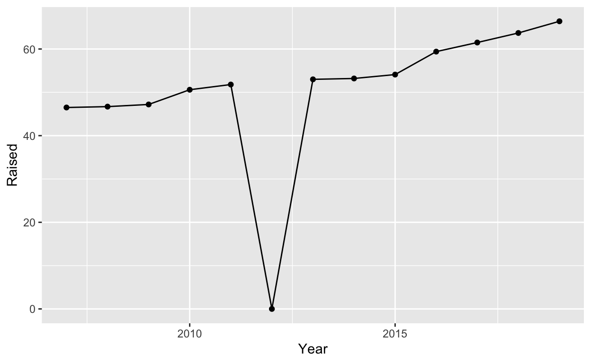
It can be seen that fundraising increases every year.
Now, we assume that raised is related to the year and other people counting information.
Call:
lm(formula = Raised ~ Year + Applicants + Accepted + Starters +
Finishers, data = selected_data)
Residuals:
Min 1Q Median 3Q Max
-36.834 -0.705 2.865 7.820 11.505
Coefficients:
Estimate Std. Error t value Pr(>|t|)
(Intercept) -4.067e+03 5.891e+03 -0.690 0.512
Year 1.936e+00 2.923e+00 0.662 0.529
Applicants 1.094e-05 1.634e-04 0.067 0.948
Accepted 1.357e-02 9.971e-03 1.361 0.216
Starters -4.473e-03 3.900e-02 -0.115 0.912
Finishers -8.353e-03 4.008e-02 -0.208 0.841
Residual standard error: 16.59 on 7 degrees of freedom
Multiple R-squared: 0.4069, Adjusted R-squared: -0.01672
F-statistic: 0.9605 on 5 and 7 DF, p-value: 0.4999The estimate of Year in the linear regression model for Raised is 1.054e+00, which is a positive coefficient, indicating that the amount of funds raised over the years has been on an upward trend. The overall model seems to suggest a positive relationship between the year and fundraising amounts, indicating an increasing trend over time. And the coefficients for the number of applicants, accepted participants, starters, and finishers are not statistically significant. This suggests that, based on the current model, these variables may not have a significant impact on fundraising amounts.
It can be seen from this plot that the winning time of men and women in wheelchairs has become significantly faster, while the winning time of normal men and women has gradually become faster, indicating that people are gradually paying attention to the competitiveness of marathon sports.
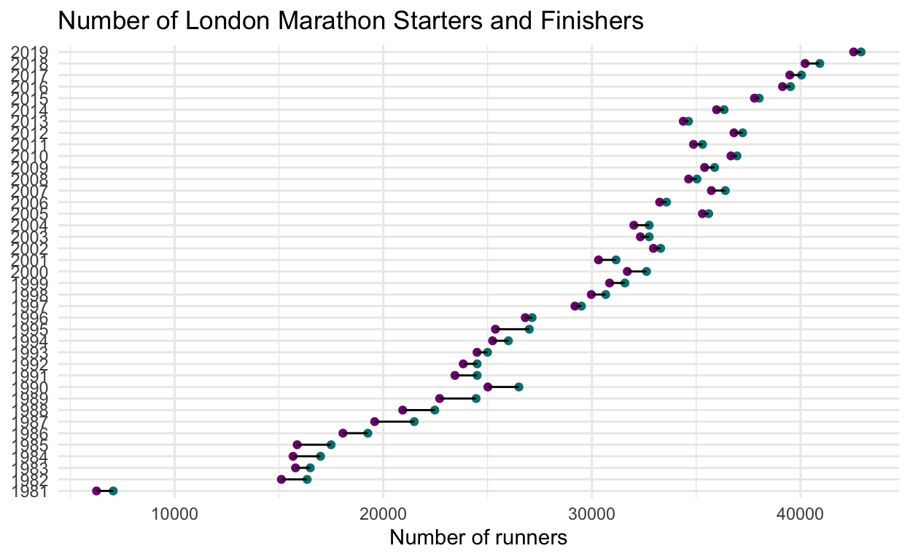
4.1 Trends in number of applicants, accepted, starters, and finishers over year

4.2 Analyze the dataset using linear models
In this part, we will use linear models to fit the data and predict the number of applicants, accepted, starters, and finishers in year 2024.
From the previous part, we can see that the number of accepted, starters, and finishers versus year are generally linear. So the models we will use are \[y_i=\beta_0+\beta_1x_i+\epsilon_i, \quad \epsilon_i \sim N(0,\sigma^2)\] For number of applicants, the model we we will use is \[y_i=\beta_0+\beta_1x_i+\beta_2x_i^2+\beta_3x_i^3+\epsilon_i, \quad \epsilon_i \sim N(0,\sigma^2)\]
Moreover, we will check the normality of the residuals.
For the number of applicants
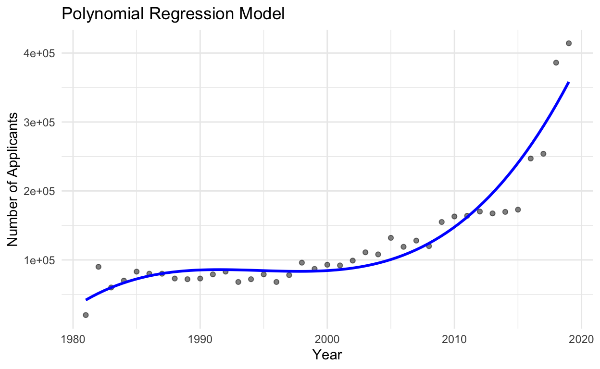
Prediction
fit lwr upr
1 571826 498633.6 645018.4The number of applicants is estimated to be 571826 in 2024. A \(95\%\) prediction interval is \((498633, 645018)\).
Model Checking
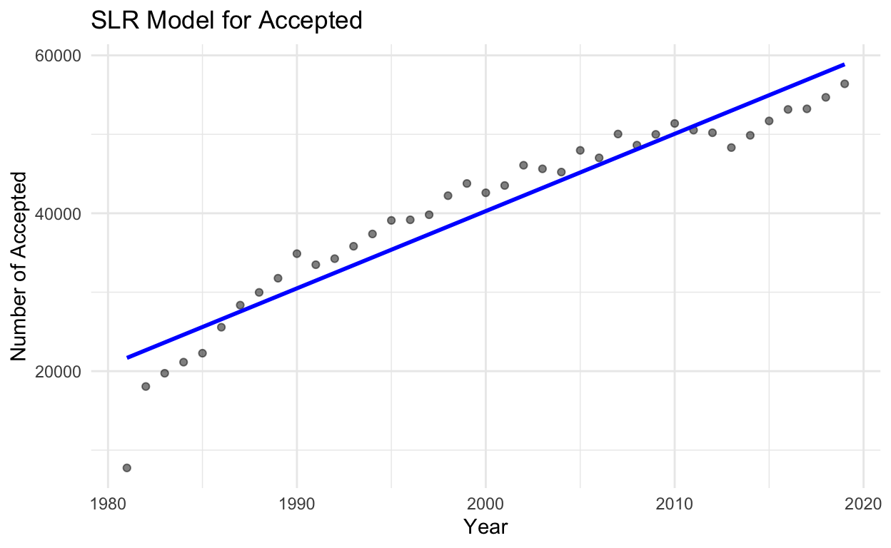
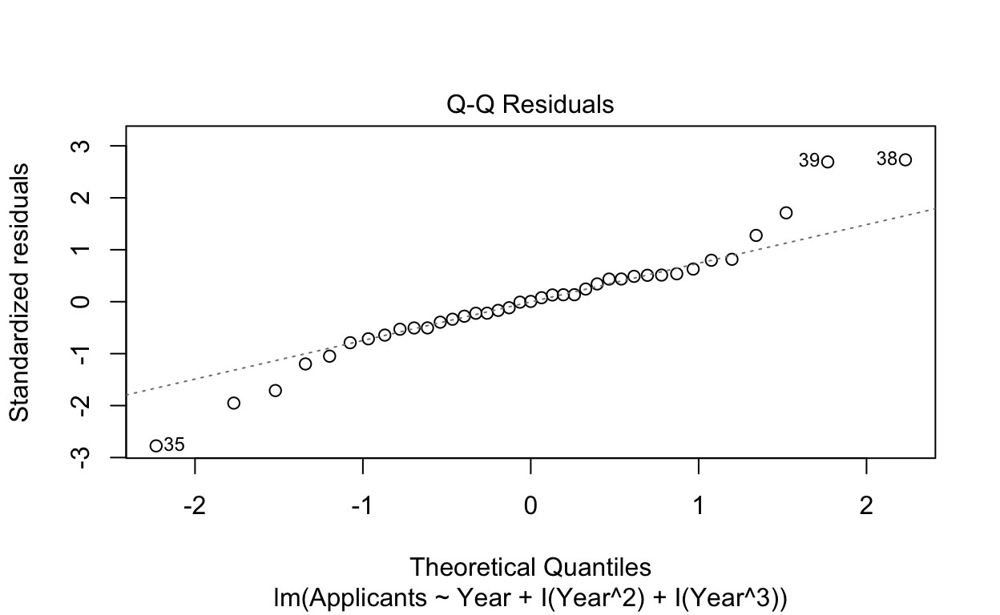
For the number of accepted

Prediction
fit lwr upr
1 63762.82 60926.6 66599.03The number of applicants is estimated to be 63762 in 2024. A \(95\%\) prediction interval is \((60926, 66599)\).
Model Checking
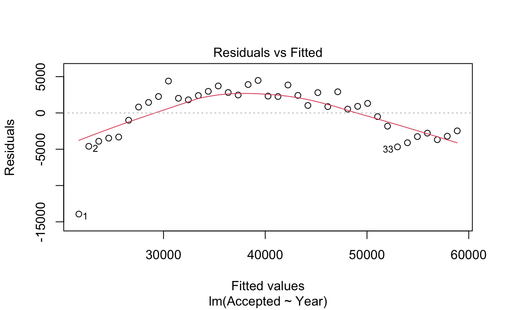
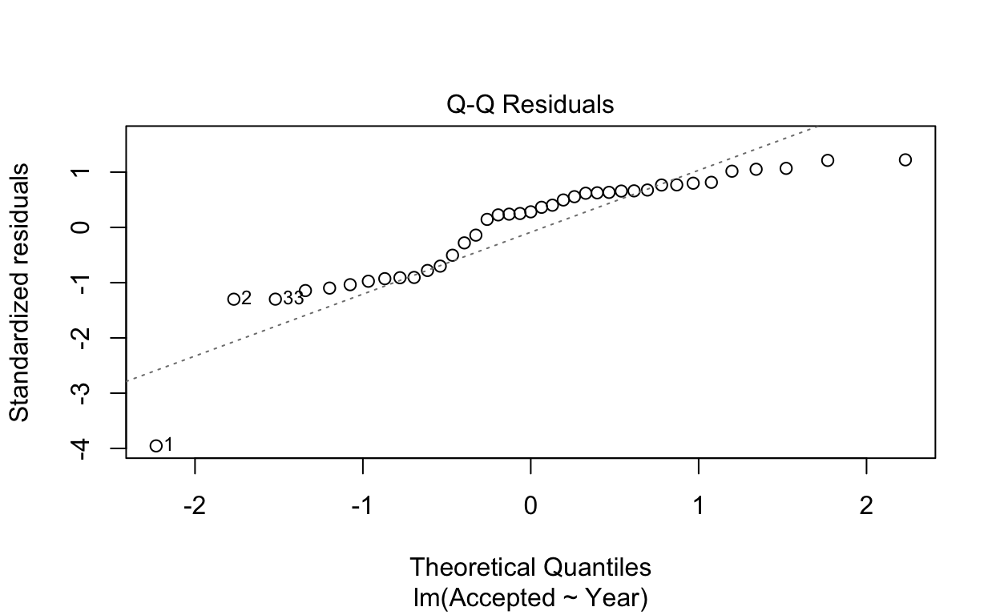
For the number of starters
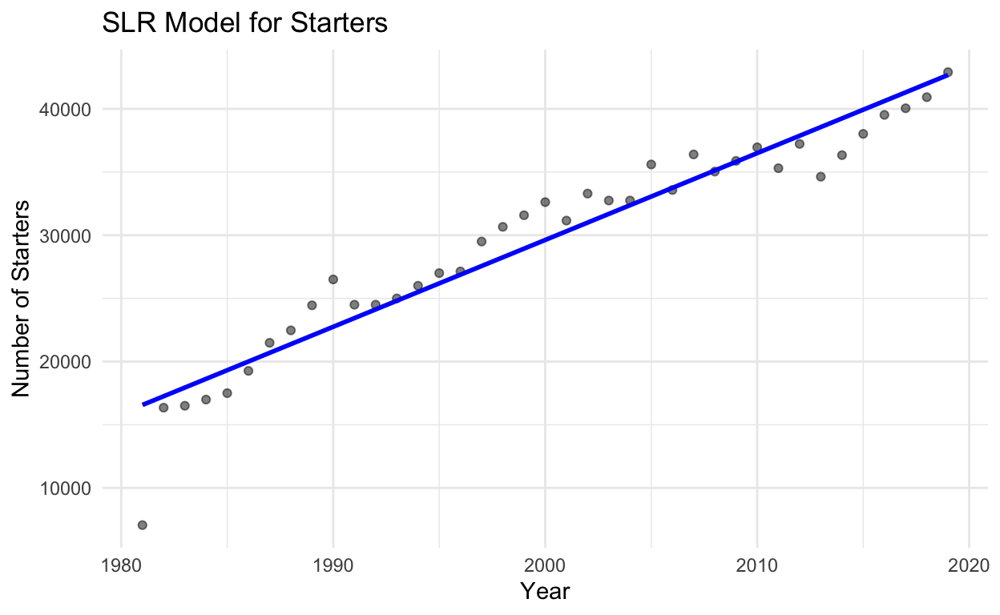
Prediction
fit lwr upr
1 46119.77 44331.73 47907.82The number of applicants is estimated to be 46119 in 2024. A \(95\%\) prediction interval is \((44331, 47907)\).
Model Checking

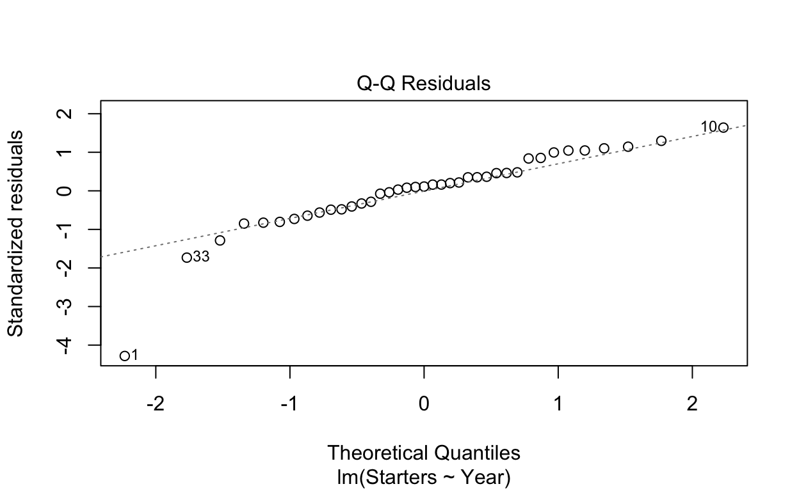
For the number of finishers
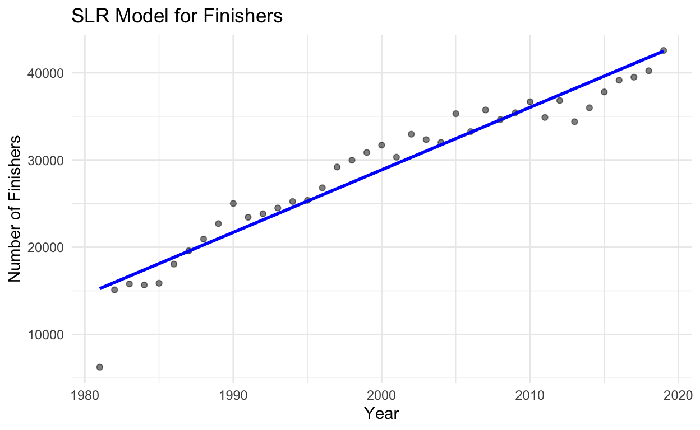
Prediction
fit lwr upr
1 46056.64 44306.16 47807.13The number of applicants is estimated to be 46056 in 2024. A \(95\%\) prediction interval is \((44306, 47807)\).
Model Checking
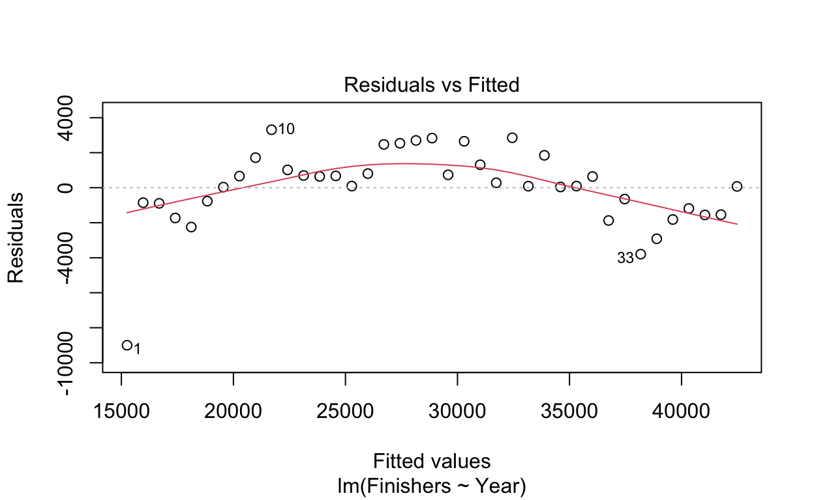
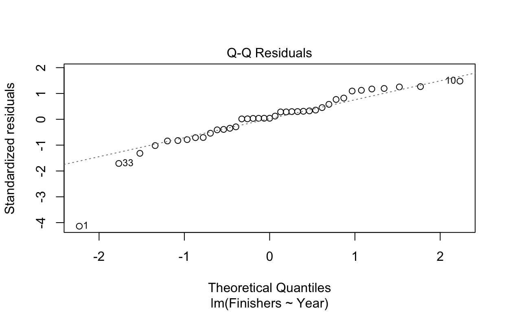
4.3 Create new variables and visulization
Let \(x\) denote the number of applicants in a year, \(y_1\) the number of accepted in a year, \(y_2\) the number of starters in a year, \(y_3\) the number of finishers in a year. We define the ratio of accepted as \(r_1=\frac{y_1}{x}\), ratio of starters as \(r_2=\frac{y_2}{y_1}\), ratio of finishers as \(r_3=\frac{y_3}{y_2}\).
# A tibble: 45 × 4
Year `Ratio of Accepted` `Ratio of Starters` `Ratio of Finishers`
<dbl> <dbl> <dbl> <dbl>
1 1981 0.387 0.911 0.887
2 1982 0.201 0.905 0.925
3 1983 0.329 0.836 0.957
4 1984 0.302 0.804 0.922
5 1985 0.268 0.786 0.907
6 1986 0.320 0.753 0.938
7 1987 0.355 0.757 0.912
8 1988 0.411 0.749 0.932
9 1989 0.441 0.770 0.928
10 1990 0.478 0.760 0.944
# ℹ 35 more rowsAccepted to Started: Over the years, there is a general trend of a decline in the percentage of accepted participants who actually start the race.
Started to Finished:
The percentage of starters who finish the race seems to be relatively stable, generally ranging from the high 80s to mid-90s.
Notable Observation (2020):
In 2020, there’s a notable observation in the “Accepted to Started” column. The percentage is 100%, indicating that all accepted participants started the race. However, the “Started to Finished” percentage is lower (79.22%), indicating that not all starters completed the race.
This discrepancy could be due to the impact of external factors such as the COVID-19 pandemic, leading to a different pattern in that particular year.
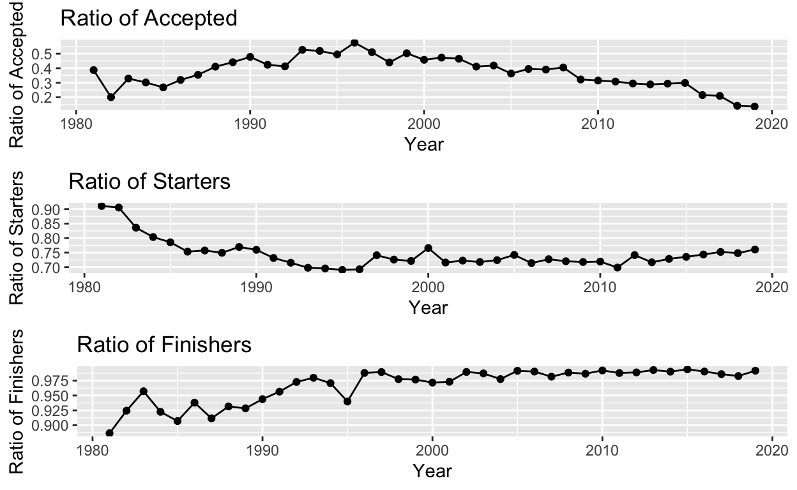
4.4 Time series analysis and forecasting
In this part, we will focus on four time series, which are number of applicants each year, ratio of accepted each year, ratio of starters each year, and ratio of finishers each year. We will use ARIMA(AutoRegressive Integrated Moving Average) model to analyze and make forecasts for the time series in London marathon dataset. For each time series, we will draw a forecasting plot of 10 years, check the autocorrelation function of the residuals, check the normality of the residuals, and do a Box-Ljung test(a statistical test used to check whether any of a group of autocorrelations of a time series are different from zero).
Analysis of number of applicants
Forecasting the number of applicants in next 10 years
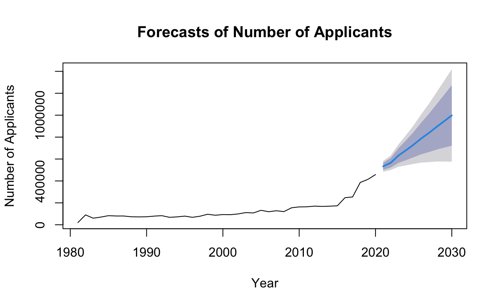
The forecasting plot shows that there will be about 6000 annual increase of number of applicants for London marathon in the next 10 years.
Checking ACF of the residuals
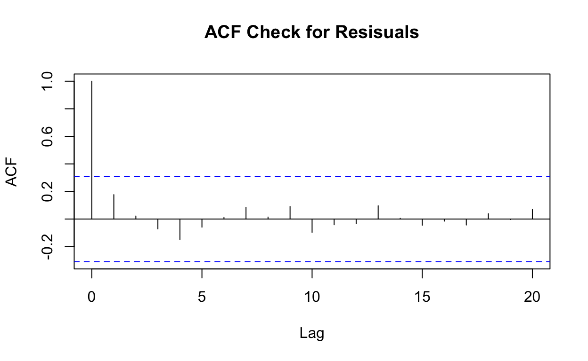
Box-Ljung test for residuals
Box-Ljung test
data: fc$residuals
X-squared = 5.7183, df = 20, p-value = 0.9992Checking normality of the residuals
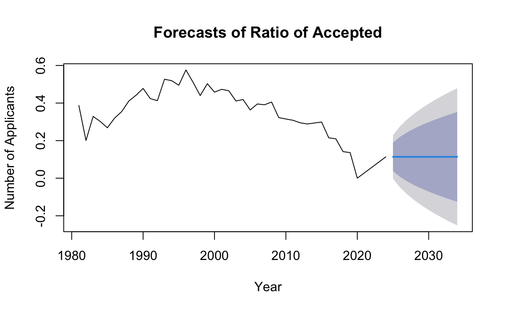
Analysis of ratio of accepted
Forecasting ratio of accepted in next 10 years

The forecasting plot shows that the ratio of accepted for London marathon in the next 10 years will generally remain constant.
Checking ACF of the residuals
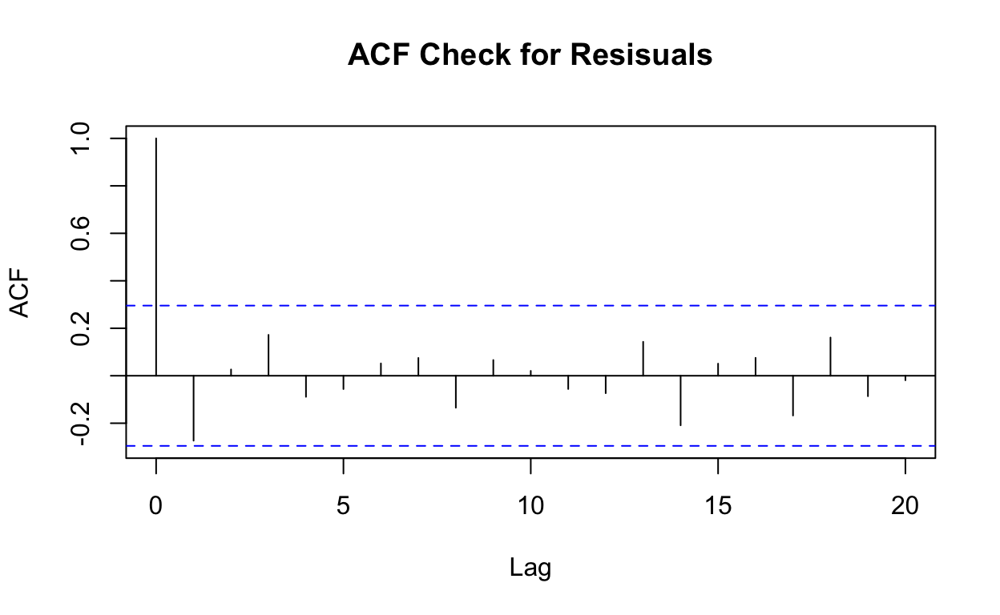
Box-Ljung test for residuals
Box-Ljung test
data: fc2$residuals
X-squared = 17.488, df = 20, p-value = 0.6211Checking normality of the residuals

Analysis of ratio of starters
Forecasting ratio of starters in next 10 years
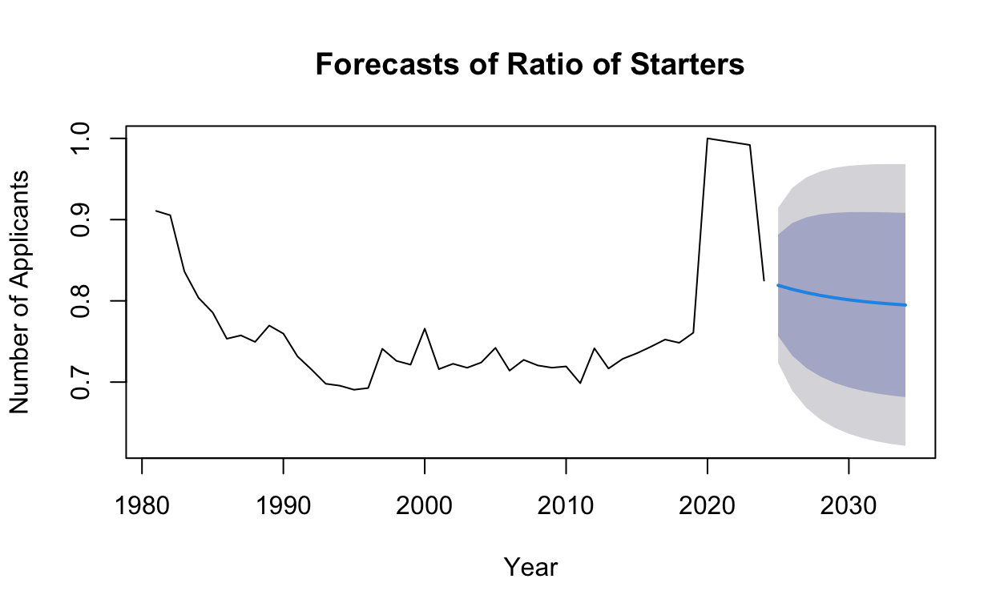
The forecasting plot shows that the ratio of accepted for London marathon in the next 10 years will decrease.
Checking ACF of the residuals
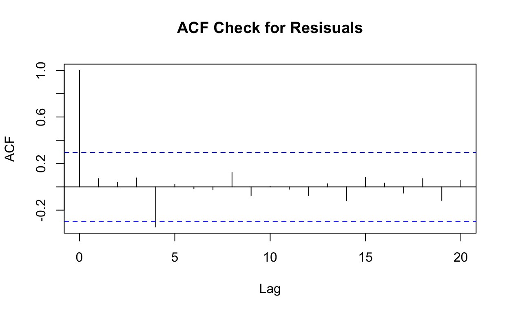
Box-Ljung test for residuals
Box-Ljung test
data: fc3$residuals
X-squared = 11.76, df = 20, p-value = 0.9241Checking normality of the residuals
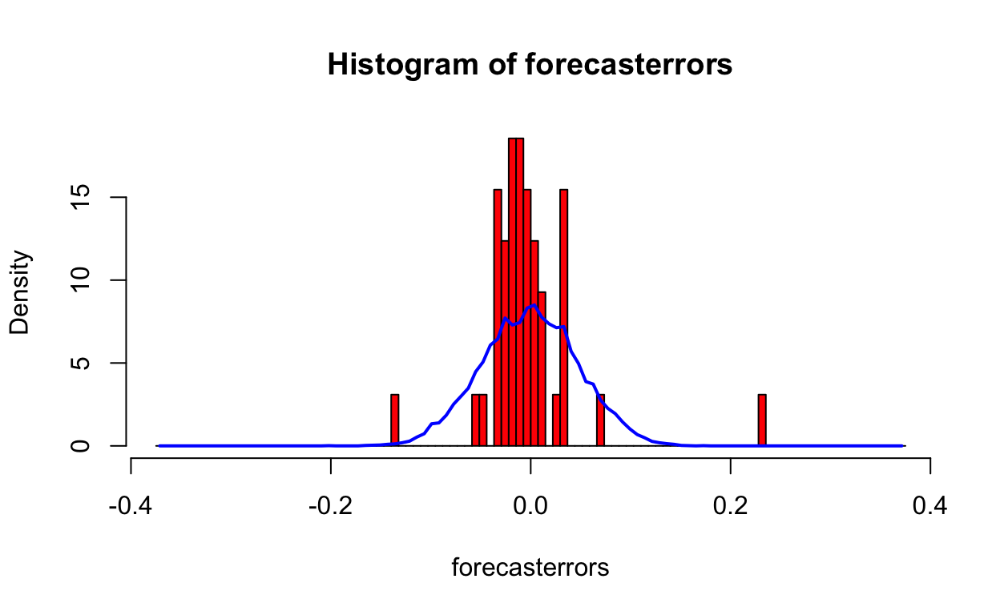
Analysis of ratio of finishers
Forecasting the ratio of finishers in next 10 years
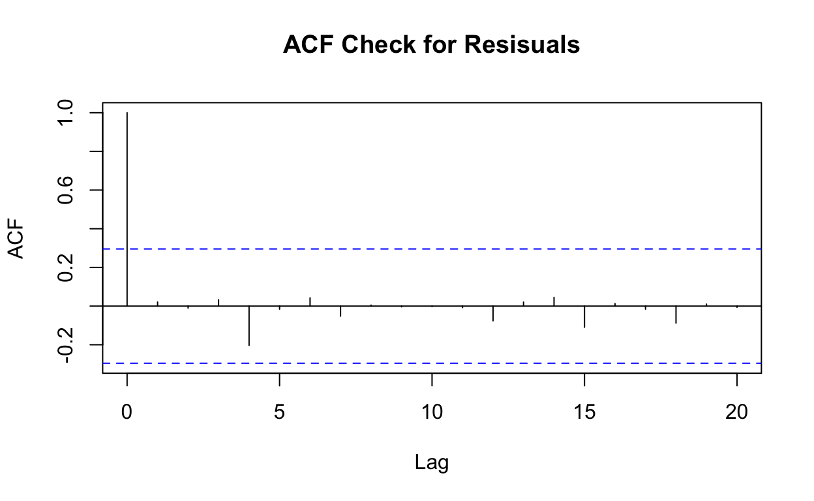
The forecasting plot shows that the ratio of finishers for London marathon in the next 10 years will remain constant.
Checking ACF of the residuals

Box-Ljung test for residuals
Box-Ljung test
data: fc4$residuals
X-squared = 4.4504, df = 20, p-value = 0.9999Checking normality of the residuals
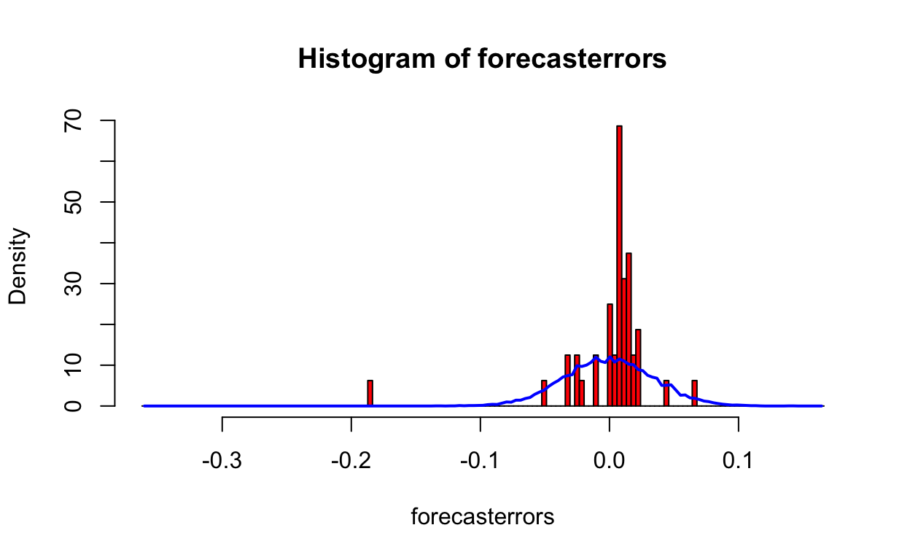
Since the correlograms in models above show that none of the sample autocorrelations for lags 1-20 exceed the significance bounds, and the p-values for the Ljung-Box test are close to 1, we can conclude that there are very little evidences for non-zero autocorrelations in the forecast errors at lags 1-20.
The histograms of the time series show that the forecast errors are roughly normally distributed and the means seem to be close to zero. Therefore, it is plausible that the forecast errors are normally distributed with mean zero and constant variance.
Since successive forecast errors do not seem to be correlated, and the forecast errors seem to be normally distributed with means zeros and constant variances, the ARIMA(s) do seem to provide adequate predictive models for the dataset.
4.5 Relating two data sets
To associate these two data sets, we start from the same field of year. Now we can explore whether winning time is related to the number of finishers in that year. We have reason to believe that the more finishers, the faster the winning time, due to the competitive nature of the elite.(hypothesis)
[1] "Correlation Coefficient: -0.493299438774951"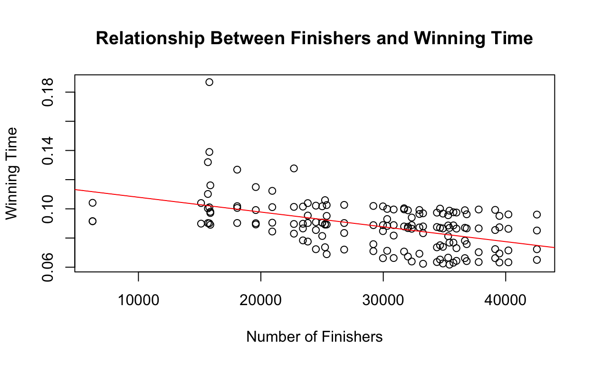
Correlation Coefficient is -0.493, the moderate negative correlation suggests that there is a tendency for winning time to decrease as the number of finishers increases. The number of participants represents the size of the marathon, so can we assume that there is also a correlation between the number of participants and winning time?
[1] "Correlation Coefficient: -0.316347580201658"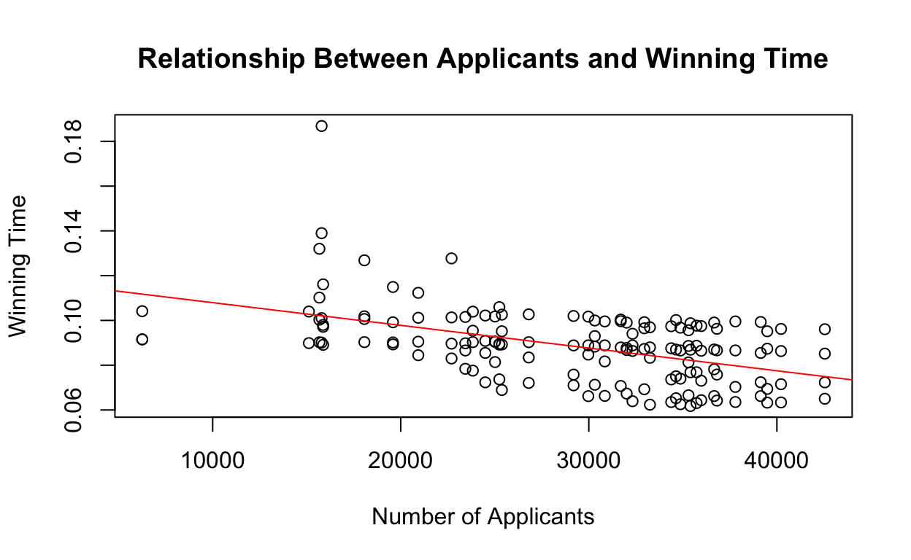
Correlation Coefficient is -0.316, the mild to moderate negative correlation suggests that there is a tendency for winning time to decrease as the number of applicants increases.